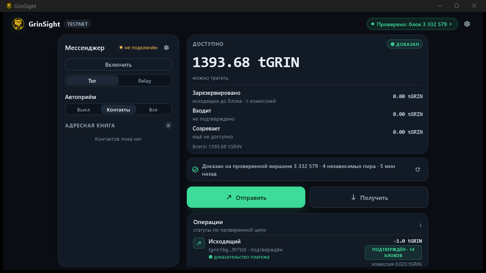

A balance you
don't have to
take on faith.
GrinSight downloads headers from public peers, verifies proof of work, the unspent-output state and every new block. It shows a balance only after proving it. No node, no trusted server.

First launch once.
Then it's seconds.
The only long step is the first mainnet verification: about 670 MB and 10–20 minutes. After that, the rolling checkpoint keeps every next launch short.
While the chain and the unspent-output state are verified, the wallet shows honest progress. This is the only long run — the proven state stays on disk afterwards.
A wallet that verifies,
not asks for trust
GrinSight doesn't replace a node — it verifies what it receives from public peers. Every layer traces back to the math.
Headers and PoW
Several public peers, proof-of-work, difficulty and link checks. The heaviest chain is chosen and confirmed by peers from different networks.
UTXO state
The unspent state is rebuilt from PIBD segments and checked against output_root from a verified header.
Every new block
Blocks up to the tip are checked against output_root / kernel_root; payment confirmation is by kernel in a block of the verified chain, with a reorg check.
Keys never leave
The phrase is encrypted with your password (scrypt + ChaCha20-Poly1305) and passed to the core only in memory. The app never stores it in the clear.
Balance breakdown
Available, reserved, incoming and immature — you can see what is spendable now and what is still waiting for confirmation.
GlauxNet and Tor
On Windows, your own encrypted mailbox runs while the wallet is open: a local store-and-forward gateway published as your onion. Tor payments and invoices also work in the Linux build.
Download and verify
Three platforms, one wallet. The signed mainnet checkpoint is included; the first update takes 10–20 minutes.
Installer
Installer without administrator rights; the signed checkpoint is inside. Wallet data lives in %APPDATA%\GrinSight.
APK · preview
Allow installs from this source. Camera and QR are in the app; Tor delivery is not in every build, slatepacks can be exchanged as text.
Download APK.deb package
Install: sudo apt install ./GrinSight-0.2.0-linux-amd64.deb. The core, the signed checkpoint and Tor are inside; a launcher and icon are added to the menu.
Verify the SHA-256
Download SHA256SUMS.txt and compare: Windows — Get-FileHash, Linux — sha256sum. The hash must match the line for your file.
Install
Windows — run setup.exe; Linux — sudo apt install ./GrinSight-0.2.0-linux-amd64.deb; Android — install the APK and allow the source.
Build the state
The first “Update” downloads about 670 MB and verifies the chain in 10–20 minutes. Later updates take seconds.
What exactly is verified
In short: headers → UTXO state → balance. Full math is in the docs.
No independent security audit yet. The chain you see is the one your peers gave you: several networks reduce, but do not exclude, isolation by dishonest peers. The shipped checkpoint is at most 90 days old; if it is older than ~300 days, the wallet offers to build its own (“Check myself”).